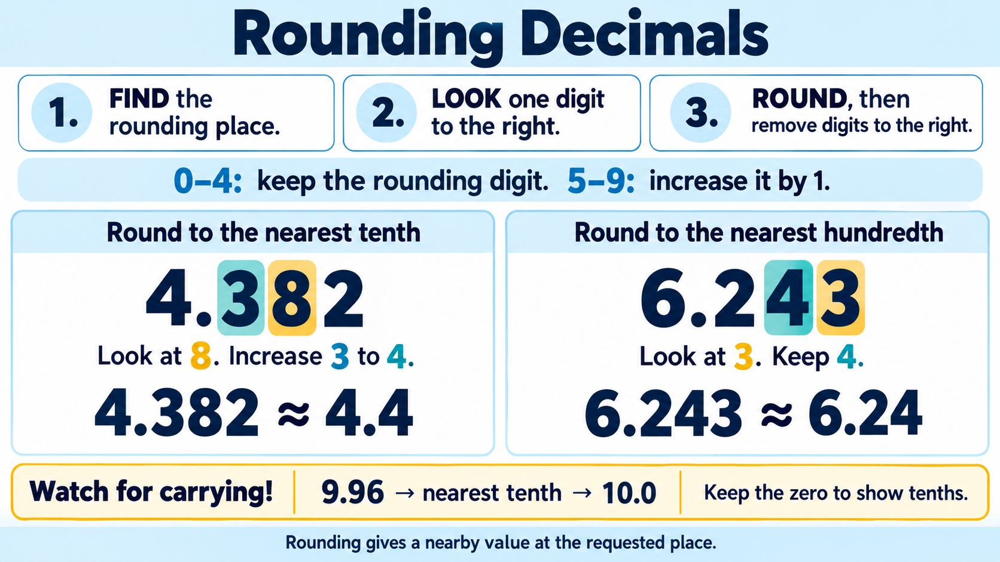

Rounding Scroll
TEN: Before you cross the ruins, learn how to find the nearest whole number, tenth, or hundredth.
Rounding decimals

The three-step rule
1. Find the place you are rounding to.
2. Look one digit to its right.
3. Round: 0–4 → keep the rounding digit. 5–9 → increase it by 1.
Explore a worked example
Enter a nonnegative number below 1,000 with up to 4 decimal digits.
Teal = rounding place Gold = digit to check
Watch for carrying!
9.96 → nearest tenth = 10.0
The hundredths digit is 6, so increase the tenths digit. Nine tenths becomes ten tenths: carry into the whole-number part.
Write 10.0 to show the nearest tenth.
Exactly halfway?
2.65 → nearest tenth = 2.7
2.65 is halfway between 2.6 and 2.7. In this lesson, we use the school rule: 5 rounds up for nonnegative numbers.
A trailing zero keeps the value the same: 2.650 = 2.65.
Your turn
Rounding reminder
Find the requested place. Check only the digit immediately to its right. For 0–4, keep; for 5–9, increase. Remove the remaining decimal digits.
Ready to cross the ruins?
Jump over poison and solve rounding crystals to open the exit.
Play Crystal Crossing →